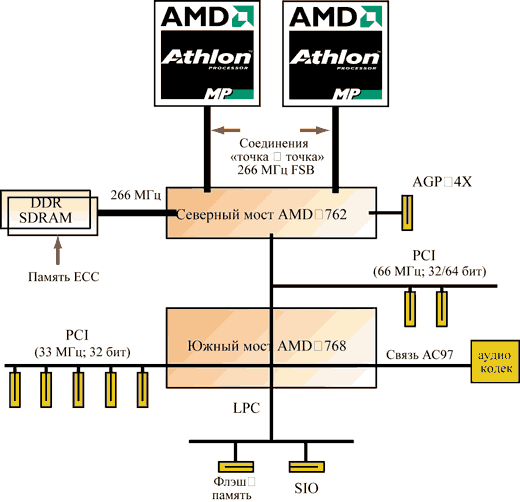
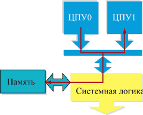
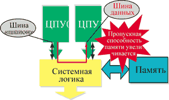
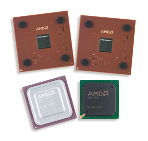

Андрей Борзенко
Корпорация AMD (http://www.amd.com), основанная в 1969 г., - второй в мире производитель микропроцессоров для ПК. Можно сказать, что AMD стояла у истоков современной полупроводниковой промышленности, начав производство комплектующих для IBM PC еще в 1982 г. Корпорация всегда старалась наладить выпуск микропроцессоров, отсутствующих в производственной программе конкурентов, и это ей хорошо удавалось.
В настоящее время AMD стала уделять большое внимание корпоративному рынку. Однако, по мнению аналитиков из Mercury Research, ей предстоит упорная борьба за каждую пядь на этом сегменте. Одним из значительных шагов по укреплению позиций компании можно считать выпуск микропроцессорной платформы, предназначенной для серверов начального уровня и рабочих станций. Речь идет о процессоре Athlon MP и наборе микросхем 760 MPX (MP eXtended) (рис. 1). По мнению специалистов корпорации, преимущество этой многопроцессорной платформе AMD обеспечивает технология Smart MP, которая позволяет повысить производительность за счет ускорения передачи данных между двумя центральными процессорами, набором системной логики и быстрыми банками системой памяти.
|  |
| Рис. 1. Двухпроцессорная платформа AMD.
|
Эксперты не отрицают, что Athlon снискал определенную популярность на рынке производительных компьютеров, и рывок в сегмент серверов и рабочих станций стал для корпорации вполне закономерным шагом. Стоит лишь отметить, что при переходе к корпоративным системам правила игры существенно меняются. Корпоративные клиенты весьма щепетильны в выборе технических решений, от которых нередко зависит финансовое благополучие их компании. К тому же в своих предпочтениях они, на первый взгляд, часто консервативны. Впрочем, AMD еще в прошлом году предприняла ряд шагов для продвижения своей платформы, в частности, заручилась ее поддержкой у ведущих поставщиков ОС Linux - компаний Caldera, MandrakeSoft, Red Hat, SuSE и Turbolinux, которые сертифицировали микросхемы AMD для своих программных продуктов. Кроме того, для разработки первых системных плат на базе набора 760 MP AMD выбрала только одну компанию - Tyan (http://www.tyan.com), которая хорошо зарекомендовала себя именно серверными продуктами.
Как известно, многопроцессорные системы существуют очень давно, причем в различных вариантах и на базе различных архитектур. Но что касается систем на основе архитектуры x86, здесь долгое время единственным поставщиком многопроцессорных решений был лидер рынка - корпорация Intel (http://www.intel.com). И уже сам факт наличия двух производителей таких систем должен благоприятно сказаться на рынке. Конкуренция, как обычно, подстегнет внедрение технологических новинок, а цены на продукцию могут и снизиться.
Семейство Athlon
Процессор Athlon дебютировал на рынке в августе 1999 г. с тактовыми частотами 500, 550 и 600 МГц. Предварительное название К7 указывало на то, что AMD относит процессор к седьмому поколению своих х86-совместимых микросхем. Первоначально чипы производили с соблюдением технологических норм 0,25 мкм. Ядро с кодовым именем Argon на площади 124 мм2 содержало 22 млн транзисторов. Кэш-память первого уровня включала двухканальную частично-ассоциативную память команд и данных емкостью по 64 Кбайт каждая (общий размер 128 Кбайт), а кэш-память второго уровня размещалась не на ядре, а в непосредственной близости от него в картридже процессора. Скорость ее работы в лучшем случае составляла половину частоты ядра. Адресная шина процессора имела ширину 43 разряда, что позволяло адресовать до 8 Тбайт памяти. В новых микропроцессорах использовалась высокопроизводительная системная шина Alpha EV6, лицензированная у корпорации Digital Equipment. Физическим интерфейсом на системных платах стал "ножевой" разъем Slot A.
Вообще говоря, шина EV6 казалась гораздо перспективней и при использовании в многопроцессорных системах. У этой шины есть два замечательных свойства. Во-первых, это не обычная общая шина, а коммутатор, который обеспечивает гарантированную пропускную способность для соединений точка - точка, в то время как на общей шине возможны конфликты. Во-вторых, EV6 работает на частоте 200 МГц (и ее можно увеличить до 400 МГц). На самом же деле EV6 работает на частоте 100 МГц, просто передача данных по ней ведется по обоим фронтам тактового сигнала, потому фактическая частота передачи данных и составляет 200 МГц. При ширине шины 64 разряда плюс 8 разрядов (код ЕСС) ее пропускная способность составляет 1,6 Гбайт/с.
Новый кристалл AMD, появившийся чуть меньше года спустя, назывался почти так же, как и раньше, - AMD Athlon Processor with performance-enhancing full-speed cache memory, что означало "процессор с улучшенной по производительности кэш-памятью, работающей на полной скорости". Кодовое название Thunderbird осталось лишь для ядра. Площадь кристалла составила 120 мм2. Интегрированная на кристалле кэш-память второго уровня объемом 256 Кбайт увеличила общее количество транзисторов до 37 млн. Надобность в процессорном картридже отпала. Теперь физическим интерфейсом для процессора стал разъем Socket-462 (или просто Socket A).
Одной из особенностей нового Athlon стал эффективный объем кэш-памяти, равный 384 Кбайт. Для ядра Athlon данная величина всегда равна сумме размеров кэш-памяти первого и второго уровней. Обычно часть кэш-памяти второго уровня отводится под хранение полной копии содержимого кэш-памяти первого уровня, но в Athlon данные, хранящиеся в кэш-памяти первого и второго уровней, никогда не совпадают. Дублируются только модифицированные строки, ожидающие записи в основную память. Соответственно и эффективный размер кэш-памяти для Thunderbird равен 384 (128 + 256) Кбайт.
Новое ядро Palomino впервые появилось у выполненных по технологии 0,18 мкм Athlon 4 для мобильных систем и Athlon MP (табл. 1). Кстати, это и был первый процессор AMD, официально поддерживающий двухпроцессорные конфигурации. Чуть позже было объявлено и решение для настольных систем на этом ядре - Athlon XP. Сокращение XP в названии новых процессоров расшифровывается как "eXtra Performance" и призвано подчеркнуть изменения по сравнению с предыдущим семейством, позволяющие нарастить производительность и тактовые частоты без перехода на новый технологический процесс.
Таблица 1. Микропроцессоры Athlon
| Параметры | Athlon (Thunderbird) | Athlon MP (Palomino) |
| Физический интерфейс | Socket A | Socket A |
| Нормы технологического процесса, мкм | 0,18 | 0,18 |
| Число транзисторов, млн штук | 37 | 37,5 |
| Размер ядра, кв. мм | 120 | 128 |
| Относительное потребление энергии | - | Уменьшено на 20% |
| Версия 3D Now! | Enhanced 3D Now! | 3D Now Professional! |
| Объем встроенной кэш-памяти, Кбайт | 384 | 384 |
Что касается Palomino, то размер этого ядра составляет 128 мм2, а число транзисторов достигает 37,5 млн. Кэш-память первого уровня равна 128 Кбайт (по 64 Кбайта на данные и инструкции); а кэш-память второго уровня - 256 Кбайт. Она встроена в само ядро и работает на его частоте. Тактовая частота системной шины EV6 - 266 МГц. Обеспечена поддержка набора инструкций 3DNow! Professional (107 SIMD-команд). Физический интерфейс - Socket A.
Чтобы объяснять различия в производительности процессоров разных классов, но работающих на одинаковой частоте, AMD разработала инициативу True Performance Initiative (TPI). Суть ее в том, что определены новые показатели производительности процессора, измеряемые на стандартных приложениях. Поскольку производительность процессора зависит как от частоты, так и от среднего числа инструкций, выполняемых им за такт, а это число команд у Athlon выше, чем у конкурирующих микропроцессоров, то значения тактовых частот кристаллов AMD приобретают, по мнению специалистов корпорации, совершенно иное значение. По этой причине AMD решила маркировать данные процессоры не их реальной частотой ядра, а неким PR-рейтингом. Этот показатель у Athlon MP начинается с отметки 1500+ и пока заканчивается на уровне 2000+. Причем это не предел - корпорация обещает выпустить еще более быстрые процессоры. Если же говорить о реальных частотах, на которых работает ядро Athlon XP, то они лежат в пределах от 1,33 ГГц в случае версии 1500+ до 1,6 ГГц в случае 1900+ при частоте системной шины 266 МГц (133 МГц х 2).
Еще одним нововведением стал чуть более тонкий пластиковый корпус OPGA (Organic Pin Grid Array). Он, во-первых, дешевле традиционного керамического, во-вторых, должен сыграть свою роль при ужесточении проектных норм до 0,13 мкм. Дело в том, что такая упаковка позволяет улучшить отвод тепла от процессора и переместить конденсаторы, фильтрующие цепи питания, поближе к ядру. Появился и ранее отсутствовавший термодиод, расположенный прямо на кристалле процессора.
Архитектура Athlon MP
Вообще говоря, микропроцессоры Athlon MP фактически не имеют никаких особенностей в архитектуре по сравнению с Athlon 4 для мобильных систем и Athlon XP для настольных компьютеров. Архитектура кристалла, получившая название QuantiSpeed, - девятипотоковая, суперскалярная и полностью конвейерная. Благодаря этому можно выполнять до девяти команд за один такт. Напомним, что в современных высокопроизводительных х86-совместимых процессорах х86-команды декодируются в более простые и эффективные внутренние RISC-подобные инструкции фиксированной длины. В Athlon для этих целей имеются три параллельно работающих декодера. Как известно, перед непосредственным исполнением RISC-команды попадают в буфер IСU (Instruction Control Unit), величина которого у Athlon составляла 72 инструкции, что должно исключать простои из-за переполнения на самых высоких частотах. Три конвейерных блока IEU (Integer Execution Unit) для исполнения целочисленных команд всегда были сильной стороной этого микропроцессора. Кроме того, арифметический сопроцессор способен выполнять одновременно три операции: простую вещественную операцию типа сложения, сложную типа умножения и отдельно операцию хранения. Общая длина целочисленного конвейера составляет 10 ступеней, а конвейера в устройстве вещественной арифметики - 15 ступеней.
Таблица предсказания переходов BTB (Branch Target Buffer), в которой сохраняются предыдущие результаты выполнения логических операций, может хранить до 2048 адресов. На основании этих данных процессор прогнозирует их результаты при их повторном выполнении. Соответственно вероятность правильного предсказания повышается примерно до 95%. Таблица, на основании которой строится предсказание BHT (Branch History Table), еще больше: она насчитывает 4096 ячеек.
Athlon MP стал первым немобильным процессором AMD, использующим полный набор SSE-инструкций (Streaming SIMD Extensions). Новый набор команд (3DNow! Плюс SSE) получил название 3DNow! Professional и включает 52 новые инструкции.
В ядре Palomino был увеличен размер буфера быстрого преобразования адреса TLB (Translation Look-aside Buffers). Задача TLB заключается в кэшировании транслируемых физических адресов памяти. Процесс трансляции необходим процессору при обращении к любым данным, хранящимся в основной памяти, а потому кэширование адресов существенно сокращает время, проходящее с момента запроса данных процессором до момента их получения. Дело в том, что в момент обращения к оперативной памяти процессор обращается не к физическому адресу ячейки, а к виртуальному (естественно, между ними есть строгое соответствие). Эти преобразованные адреса и размещаются в TLB, причем отдельно для инструкций и данных. Если процессор не найдет нужный адрес, ему придется заняться его вычислением. Учитывая совсем немаленькое количество адресов в большинстве случаев, подобные операции могут заметно притормозить процессор. Понятно, что расширение TLB должно самым положительным образом сказываться на производительности. Среди основных особенностей стоит отметить, что в TLB кэш-памяти данных первого уровня Athlon MP число строк увеличено с 32 до 40. В TLB кэш-памяти команд и кэш-памяти данных второго уровня используется так называемая специальная exclusive-архитектура. Строки TLB поддерживают опережающую загрузку.
Увеличение числа строк в TLB кэш-памяти данных повышает вероятность успешного попадания в буфер (вероятность нахождения нужного адреса). Особенность архитектуры заключается в том, что записи в TLB кэш-памяти первого уровня не дублируются в TLB кэш-памяти второго уровня. Таким образом, в последнем экономятся строки, благодаря чему этот буфер может кэшировать больше адресов.
Задача механизма упреждающей выборки DPM (Data Prefetch Mechanism) состоит в том, чтобы правильно предсказать, какие данные из основной памяти понадобятся для обработки процессору, и заблаговременно загрузить их в кэш-память. Если механизм срабатывает правильно, то такое нововведение опять-таки положительно сказывается на производительности. Однако при этом резко возрастают требования к пропускной способности шины FSB (Front Side Bus) и памяти. У Athlon Thunderbird и в более ранних версиях кристаллов подобный механизм работал только с инструкциями 3DNow! и SSE. С появлением процессоров на ядре Palomino (Athlon MP) упреждающая выборка данных была существенно доработана. Теперь с ее помощью возможно повышать производительность любых, даже не оптимизированных приложений. Athlon МP непрерывно анализирует адреса затребованных процессором данных наряду с последовательностью, в которой они были затребованы. На основании анализа делается попытка предсказания, какие адреса данных будут затребованы, и происходит опережающая загрузка информации в кэш-память. Это может быть особенно полезно, например, при циклической обработке больших массивов. Упреждающая выборка данных хорошо работает с приложениями, которые активно используют высокую пропускную способность, так как такой трафик легче поддается предсказанию. К этим приложениям относятся программы редактирования видео, создания 3D-графики и серверы баз данных.
Дальнейшее развитие семейства микропроцессоров Athlon MP связано с переходом на новое ядро Thoroughbred, выполненное с соблюдением проектных норм 0,13 мкм. К концу года ожидается также появление ядра Barton, которое помимо новых проектных норм будет использовать технологию "кремний на изоляторе" SOI (Silicon-On-Insulator).
Особенности многопроцессорной архитектуры
Набор микросхем AMD 760MP обладает двумя важными функциями, благодаря которым двухпроцессорные системы на его основе имеют высокую производительность. Это системная шина с топологией точка - точка и поддержка MOESI (Modified Owner Exclusive Shared Invalid) протокола когерентности. В SMP-системах, построенных на микросхемах Intel, процессоры подключаются к общей системной шине и разделяют между собой ее пропускную способность (рис. 2). В случае использования чипсета AMD 760MP каждому процессору Athlon MP выделяется своя отдельная шина. При таком соединении типа точка - точка, в котором каждый из процессоров общается с чипсетом по собственной шине (рис. 3), каждый процессор может передавать данные со скоростью до 2,1 Гбайт/c (при частоте системной шины 266 МГц) вне зависимости от того, что делает в этот момент времени другой процессор. Таким образом, теоретически оба процессора вместе могут позволить себе использование общей шины с пропускной способностью 4,2 Гбайт/c.
|  |  |
| Рис. 2. Разделяемая шина.
|
Рис. 3. Соединения точка - точка.
|
В большинстве многопроцессорных систем каждый процессор отслеживает запросы по шине FSB и возвращает данные, если они находятся в кэш-памяти. Если один процессор обнаруживает, что другой обращается к памяти по какому-то из принадлежащих ему адресов (иными словами, у него имеется самая свежая копия данных), то процессор отвечает на запрос и выгружает данные из своей кэш-памяти. При необходимости записать данные по адресу процессор запрашивает права на использование ресурса и оставляет их за собой до тех пор, пока он снова не выгрузит "устаревшие" данные обратно в память или до тех пор, пока другой процессор не затребует эти права.
Рассмотрим систему на базе двух процессоров Athlon MP (ЦПУ0 и ЦПУ1). Сначала ЦПУ0 запрашивает блок данных, содержащийся в основной памяти и не содержащийся в кэш-памяти ЦПУ0 или ЦПУ1. Блок данных считывается из основной памяти, проходит через северный мост и попадает на запрашивавший процессор ЦПУ0. После этого ЦПУ0 запрашивает еще один блок данных, который теперь содержится в кэш-памяти второго уровня ЦПУ1. Последний всегда отслеживает запросы данных на FSB (такой процесс называется "слежкой", snooping). Соответственно теперь ЦПУ1 отсылает данные из своей кэш-памяти. У ЦПУ0 существует два пути получения данных: либо ЦПУ1 записывает блок в основную память и ЦПУ0 потом его считывает, либо ЦПУ1 передает данные напрямую на ЦПУ0.
При использовании разделяемой шины FSB все процессоры системы используют одно и то же соединение к северному мосту. Общение между процессорами идет через основную память, что соответствует первому способу из названных выше. При использовании FSB типа точка - точка у каждого процессора есть свое выделенное соединение к северному мосту, и обмен осуществляется через северный мост, не затрагивая основной памяти.
Конечно, использование FSB типа точка - точка или разделяемой FSB зависит от набора микросхем. Процессор лишь должен поддерживать устанавливаемый чипсетом протокол. Как уже отмечалось, в случае 760MP и Athlon MP применяется шина типа точка - точка. Этот тип шины позволяет уменьшать трафик на шине памяти, так как все межпроцессорное общение происходит без участия основной памяти.
Еще одно преимущество EV6 FSB у Athlon MP заключается в том, что она содержит два однонаправленных порта адреса (адрес на вход и адрес на выход) и один двунаправленный порт данных на каждом соединении. Это означает, что Athlon MP одновременно с выполнением запроса может "подглядывать" в поисках требуемых данных.
Обеспечение когерентности кэш-памяти
Пусть каждый (ЦПУ0 и ЦПУ1) владеет блоком данных в своей кэш-памяти. Затем ЦПУ1 изменяет эти данные у себя, и после этого ЦПУ0 будет пытаться прочитать данные у ЦПУ1. В текущем положении данные в кэш-памяти ЦПУ0 не являются актуальными, поскольку они были изменены после того, как ЦПУ0 поместил их в свой буфер. Для решения таких проблем процессоры должны обладать когерентной друг с другом кэш-памятью.
Существует множество вариаций протоколов когерентности кэш-памяти. Наиболее часто используется протокол записи с аннулированием WI (Write Invalidate). В случае возникновения конфликта когерентности этот протокол указывает, какой кэш-памяти необходимо аннулировать свои данные. Аннулирование происходит по адресной шине, так что двухпортовая адресная шина EV6 снова оказывается в выигрыше, позволяя одновременно с аннулированием запрашивать какие-либо полезные данные.
Из вариаций протокола записи с аннулированием чаще всего встречается протокол MESI. Аббревиатура происходит от первых букв четырех состояний, которые может принимать строка кэш-памяти (Modified, Exclusive, Shared, Invalid). Ниже описаны все эти состояния.
Состояние строки "модифицированная" (Modified). Данные в этой строке кэш-памяти были изменены. Данные в остальной кэш-памяти недостоверны. Копия данных в основной памяти также недостоверна.
Состояние строки "единственная" (Exclusive). Данные содержатся только в этой кэш-памяти. Копия данных в основной памяти достоверна.
Состояние строки "разделяемая" (Shared). Данные верны в этой кэш-памяти и в остальной. Копия данных в основной памяти достоверна.
Состояние строки "недостоверная" (Invalid). Данные в кэш-памяти недостоверны.
Применение протокола MESI позволяет несколько разгрузить шину благодаря отказу от пересылок данных из кэш-памяти одного процессора в память и затем в кэш-память другого во всех состояниях, кроме Modified. Протокол MESI используется в большинстве x86-процессоров, включая AMD K6, Intel Pentium III, Pentium 4 и Xeon. Даже процессоры PowerPC реализуют протокол когерентности MESI. AMD же решила пойти дальше и отказаться от ненужных пересылок данных из кэш-памяти одного процессора в кэш-память другого через память. Наличие собственной шины для каждого из кристаллов в двухпроцессорной системе позволяет пересылать данные непосредственно из одной кэш-памяти в другую, минуя основную память. Для этого в системах Athlon MP используется более совершенный протокол MOESI с пятью состояниями строки. Пятое состояние называется "собственная" (Owned). Оно включается, если запрашиваемые данные находятся в кэш-памяти процессора, они были изменены и копия в памяти недостоверна. Реализация протокола MOESI более трудоемка и требует включения в процессор большего количества транзисторов. Однако такой протокол прекрасно работает с двумя адресными портами FSB точка - точка у Athlon MP и действительно повышает эффективность работы шины.
Наборы микросхем
Набор микросхем AMD 760MP имеет традиционную структуру (см. рис. 1) и состоит из двух микросхем: системного контроллера (северного моста) AMD 762 и контроллера периферийных устройств (южного моста) AMD 766, известного по чипсету AMD 760. Соединение между мостами осуществляется при помощи шины PCI. Северный мост набора поддерживает до двух процессоров с интерфейсом Socket A, работающих с системной шиной с частотой 200 или 266 МГц.
Когда речь идет о памяти в приложении к серверам и рабочим станциям, следующий после адресуемого объема важный параметр - надежность работы. Высокие требования к надежности работы стали причиной того, что многие высококлассные серверные платформы требуют память ECC (c коррекцией ошибок). Во многих случаях, когда предъявляются повышенные требования к плотности модулей, необходима также память типа Registered. Контроллер памяти, встроенный в северный мост, поддерживает 266 или 200 МГц DDR SDRAM с функцией коррекции ошибок ECC (Error Correction Code). Частота памяти синхронизирована в AMD 762 с частотой системной шины. В случае использования Registered DIMM набор позволяет адресовать максимальный для 32-разрядных процессоров объем оперативной памяти - 4 Гбайт (в противном случае только 2 Гбайт). Модули памяти класса PC Registered DIMM разработаны специально для обеспечения максимальной отказоустойчивости подсистемы памяти. В отличие от обычных модулей SDRAM DIMM они имеют усовершенствованный механизм функционирования, обеспечивающий их гарантированную работу на соответствующей тактовой частоте. Схемотехнически модуль SDRAM Registered DIMM, кроме микросхем памяти и микросхемы последовательного детектирования SPD (Serial Presence Detect), содержит микросхемы-регистры, обеспечивающие страничную организацию памяти, а также кристаллы PLL (Phase Locked Loop) фазовой автоподстройки частоты с обратной связью для задания и точного удержания необходимого значения частоты.
В системном контроллере AMD 762 поддерживается и шина AGP 4x. Следует также отметить, что в сам северный мост чипсета AMD 760MP встроен PCI-контроллер, поддерживающий до семи устройств PCI Bus Master при частоте шины 33 МГц или до двух таких устройств при работе в режиме 66 МГц. Однако в случае южного моста AMD 766 шина PCI работает только в 33-мегагерцевом режиме, что автоматически исключает возможность поддержки PCI-устройств с частотой 66 МГц.
По этой причине AMD выпустила новый южный мост - AMD 768. Новый набор микросхем получил название AMD 760MPX (рис. 4, табл. 2). AMD 768 соединяется с северным мостом посредством 64-разрядной шины PCI 66 МГц, что обеспечивает скорость обмена между ними до 266 Мбайт/с и позволяет использовать PCI-контроллер набора в режиме 66 МГц. PCI-контроллер для обычных 32-разрядных устройств 33 МГц содержится в микросхеме южного моста AMD 768.
|  | Рис. 4. Микропроцессоры Athlon MP и набор 760MPX.
|
Таблица 2. Наборы микросхем AMD 760
| Характеристики | AMD-760 | AMD-760 MP | AMD-760MPX |
| Норма технологического процесса, мкм | 0,25 | 0,25 | 0,25 |
| Число процессоров | 1 | 2 | 2 |
| Число FSB | 1 | 2 | 2 |
| Частота FSB, МГц | 200/266 | 200/266 | 200/266 |
| Пропускная способность FSB, Гбайт/с | 2,1 | 2,1 | 2,1 |
| Максимальный объем памяти, Гбайт | 4 | 4 | 4 |
| Тип ECC DDR | PC2100, PC1600 | PC2100, PC1600 | PC2100, PC1600 |
| Тип AGP | 4x | 4x | 4x |
| Поддержка PCI | 33 МГц/32 бит | 33 МГц/64 бит, 33 МГц/32 бит | 66 МГц/64 бит, 66 МГц/32 бит, 33 МГц/32 бит |
| Интерфейс подсистемы дисковой памяти | ATA 33/66/100 | ATA 33/66/100 | ATA 33/66/100 |
| Поддержка AC97 Audio | Есть | Есть | Есть |